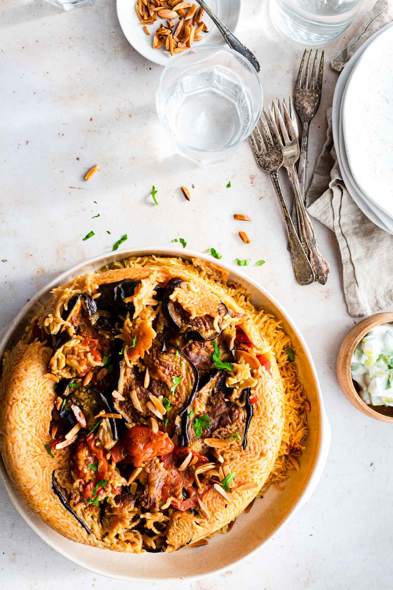

Maqloubeh

Description:
Maqluba is a dish commonly made across various Arabic countries like Iraq
(where I'm from), Palestine, Jordan and Syrian. Each household probably
has their own way of preparing this famous dish. But one thing remains
true amongst all versions: it's a layered dish using rice, vegetables and
meat.
Ingredients:
- 600 g - 900g of lamb or veal pieces
- 2 tablespoons vegetable oil
- 2 cinnamon sticks
- 4 pods green cardamom
- 3 bay leaves
- 4 whole allspice or black peppercorn
- 4 whole cloves
- ½ teaspoon turmeric
- 4 tablespoons tomato paste
- 3.5 teaspoons salt
- 1.5 teaspoons black pepper
- 3 cups water
Steps:
- Start by preheating the oven to 450F
-
Wash the eggplant and peel it every other stripe as shown in the
ingredients photo. Cut into into thick slices, about half an inch thick
-
Wash and peel the potatoes, and cut them into roughly half inch thick
circles
-
Place the eggplant and the potato on a lined baking sheet. Sprinkle them
with salt and combine them with the oil (the amounts under the
ingredients section). Bake for 30 minutes.
-
Wash the meat and sear it on medium high heat using the 2 tablespoons of
oil. Add the 3 cups of water and all the whole spices and pressure cook
for 10 minutes. If you are not using a pressure cooker, boil on stove
top covered on medium heat for 40-60 minutes until tender.
-
Cut the onion and pepper into wings or slices. Cook with the oil in a
pan over medium heat for 7 minutes until softened. Set aside.
-
Once the meat is cooked, remove it and set aside. Strain the stock from
the whole spices.
-
To the hot stock (in a bowl or a pot), add the turmeric, salt, black
pepper and tomato paste. Mix well to combine and add additional water to
reach the 5.5 cups required. I do this by using a measuring cup to
measure the total amount of stick then top it up with water until I
reach 5.5 cups
-
Wash the rice several times until the water runs clear. Drain it and set
aside
- Cut the tomato into slices